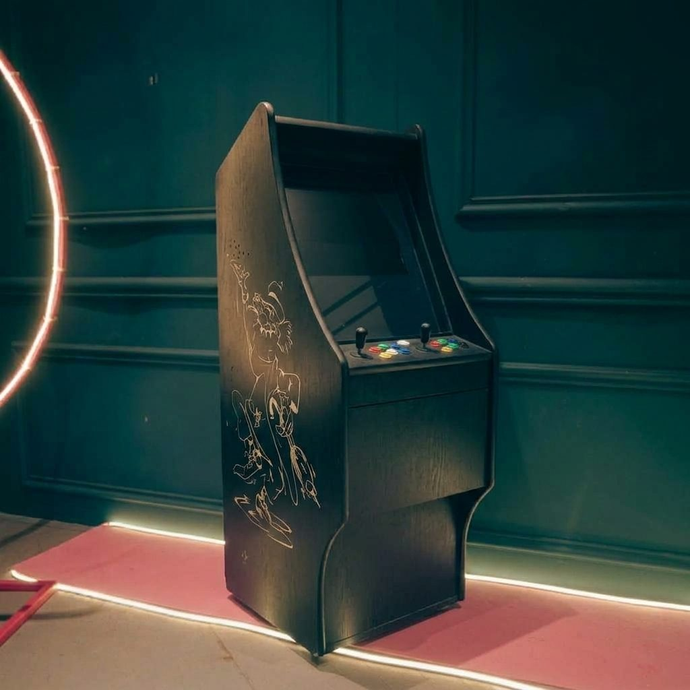
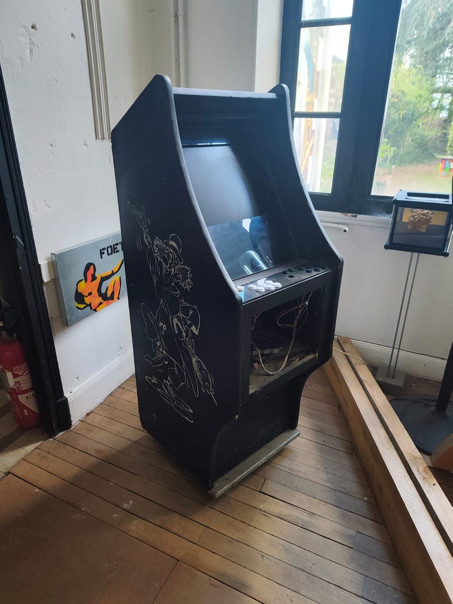
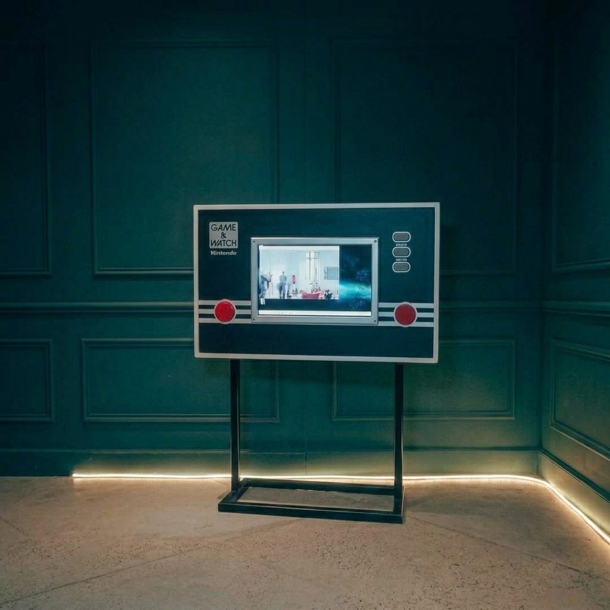

Bornes d’arcade
Sur pied ou sur table, les classiques qu’on connaît tous.

L’animation
Joystick, boutons, jeux rétro : tout le monde sait jouer. Plusieurs bornes côte à côte pour les tournois. Elles voyagent avec les Modules Pixel : pas de livraison en plus.
Soirée, afterwork, fête publique : des parties courtes, beaucoup de passage.
En trois étapes
On installe les bornes, sur pied ou sur table, côte à côte.
Joystick, boutons, jeux rétro : on prend les commandes, tout le monde sait jouer.
En libre-service toute la soirée, avec des tournois si vous le souhaitez.


Autres animations

Flipper numérique
Le flipper sans limites : des dizaines de tables, à un ou deux joueurs.
Voir l’animation →
Game & Watch géant
Une console de poche rétro, en version géante sur pied. Elle attire l’œil de loin.
Voir l’animation →
Simulateur cockpit
Une borne d’arcade dans un cockpit fermé : on s’installe, on pilote.
Voir l’animation →Bornes d’arcade pour votre événement ?
Donnez-nous la date, le lieu et le nombre d’invités : nous vous répondons avec une formule et un devis détaillé.